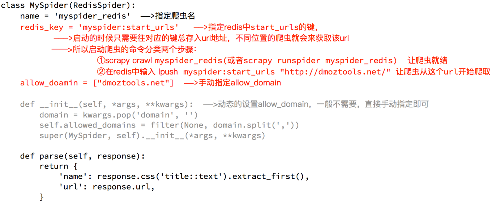

1 RedisSpider
1.0 为什么使用RedisSpider
我们在start_urls中指定的起始URL, 会直接入队, 如果在多太电脑上同时启动爬虫程序, 那么起始的URL就会被重复请求
RedisSpider就可以解决这个问题. 我们通过 example-project 中的 myspider_redis.py 来看一下他是如何解决这个问题的
1.1 分析 myspider_redis.py 中代码
通过观察代码：
- 继承自父类为RedisSpider
- 增加了一个redis_key的键，没有start_urls，因为分布式中，如果每台电脑都请求一次start_url就会重复
- 多了
__init__方法，该方法不是必须的，可以手动指定allow_domains

1.2 动手实现当当图书爬虫
需求：抓取当当图书的信息
目标：抓取当当图书信息, 包含: 图书所属大分类、图书所属小的分类、小分类的url地址, 图书的名字、封面图片地址、图书url地址、作者、出版社、出版时间、价格、
思路分析：
1. 程序的入口
当当图书中，从大分类入手，还有一个中间分类，以及小分类，小分类对一个的地址就是列表页的地址
注意，url地址的响应和elements略微不同，其中不是每个大分类都在a标签中，中间部分分类不在span标签中

- 注意: 由于前两个大分类中小分类对应的列表是变化的,我们只需要根据不同小分类名称进行它的列表类型, 然后进行不同提取就可以; 由于列表类型很多, 需要写很多提取代码, 我们这里就不提取了,大家课下有时间可以自己尝试着写写.
2. 确定列表页的url地址和程序终止条件
存在下一页

不存在下一页

3. 确定数据的位置
数据都在url地址对应的响应中，包括列表

4. 完善spider
可以使用scrapy的方式创建爬虫，只需要把父类进行修改，添加redis_key
5. 在settings.py中配置 Scrapy_Redis
代码实现:
1. 创建爬虫项目
scrapy startproject book
2. 明确爬取目标
目标：抓取当当图书信息, 包含: 图书所属大分类、图书所属小的分类、小分类的url地址, 图书的名字、封面图片地址、图书url地址、作者、出版社、出版时间、价格、
import scrapy
# 当当图书的数据模型
class DDBookItem(scrapy.Item):
# define the fields for your item here like:
# 图书所属大分类
b_category_name = scrapy.Field()
# 图书所属小的分类
s_category_name = scrapy.Field()
# 小分类的url地址
s_category_url = scrapy.Field()
# 图书的名字
book_name = scrapy.Field()
# 封面图片地址
book_img_url = scrapy.Field()
# 图书url地址
book_url = scrapy.Field()
# 作者
book_author = scrapy.Field()
# 出版社
book_publisher = scrapy.Field()
# 出版时间
book_published_date = scrapy.Field()
# 价格、
book_price = scrapy.Field()
3. 创建当当图书爬虫
cd book
scrapy genspider dangdang dangdang.com
4. 完善爬虫代码
# -*- coding: utf-8 -*-
import scrapy
from copy import deepcopy
from book.items import DDBookItem
# 1. 继承RedisSpider
from scrapy_redis.spiders import RedisSpider
class DangdangSpider(RedisSpider):
name = 'dangdang'
allowed_domains = ['dangdang.com']
# 起始URL
# start_urls = ['http://book.dangdang.com/']
#2. 把start_urls改为redis_key
# 值就是起始URL在Redis数据库中的key
redis_key = 'dangdang:start_urls'
def parse(self, response):
# 获取包含大分类和小分类的div列表
divs = response.xpath('//*[@id="bd_auto"]/div[2]/div[1]/div[1]/div[3]/div')
# 遍历divs获取大分类, 以及小分类和URL
for div in divs:
item = DDBookItem()
# 获取大分类名称
# 注意: 在大分类中response中没有span
item['b_category_name'] = ''.join([name.strip() for name in div.xpath('./dl/dt//text()').extract()])
# 获取小分类的a标签列表
a_s = div.xpath('./div/div/div[1]/dl/dd/a')
for a in a_s:
item['s_category_name'] = a.xpath('./text()').extract_first()
item['s_category_url'] = a.xpath('./@href').extract_first()
# print(item)
# 构建小分类列表页请求
yield scrapy.Request(item['s_category_url'], callback=self.parse_book_list, meta={'item': deepcopy(item)})
def parse_book_list(self, response):
# 取出上一个解析函数传递过来的数据
item = response.meta['item']
# 解析类别数据
# 获取包含图书信息的li标签列表
lis = response.xpath('//*[contains(@id,"component")]/li')
# 遍历lis列表, 获取图书信息
for li in lis:
item['book_name'] = li.xpath('./p[@class="name"]/a/text()').extract_first()
item['book_url'] = li.xpath('./p[@class="name"]/a/@href').extract_first()
# 封面图片地址
# 注意: 在response中这里99.9%真是图片URL在属性data-original
item['book_img_url'] = li.xpath('./a/img/@data-original').extract_first()
if item['book_img_url'] is None:
item['book_img_url'] = li.xpath('./a/img/@src').extract_first()
item['book_price'] = ''.join(li.xpath('.//span[contains(@class,"price")][1]//text()').extract())
item['book_author'] = ''.join(li.xpath('./p[@class="search_book_author"]/span[1]//text()').extract())
item['book_published_date'] = li.xpath('./p[@class="search_book_author"]/span[2]/text()').extract_first()
item['book_publisher'] = li.xpath('./p[@class="search_book_author"]/span[3]/a/text()').extract_first()
# print(item)
yield item
# 分页
# 提取下一页的URL
next_url = response.xpath('//a[text()="下一页"]/@href').extract_first()
# 如果有这个数据, 就说名有下一页,否则就没有
if next_url:
next_url = response.urljoin(next_url)
print(next_url)
yield scrapy.Request(next_url, callback=self.parse_book_list, meta={'item': deepcopy(item)})
5. 修改为RedisSpider爬虫
- 由继承Spider 改为 继承RedisSpider
from scrapy_redis.spiders import RedisSpider # 1. 由继承Spider 改为 继承RedisSpider class DangdangSpider(RedisSpider): - 把start_urls 改为 redis_key
# 2. 把start_urls 改为 redis_key # start_urls = ['http://book.dangdang.com/'] redis_key = 'dangdang:start_urls'
6. 在settings.py中配置 Scrapy_Redis
无论是Spider是怎样的, 配置都不发生改变
# Scrapy_Redis配置信息
DUPEFILTER_CLASS = "scrapy_redis.dupefilter.RFPDupeFilter"
SCHEDULER = "scrapy_redis.scheduler.Scheduler"
SCHEDULER_PERSIST = True
# 配置使用Redis来存储爬取到的数据, 如果不需要使用Redis存储可以不配置
ITEM_PIPELINES = {
'scrapy_redis.pipelines.RedisPipeline': 400,
}
# Redis数据库配置
REDIS_URL = "redis://127.0.0.1:6379"
总结: 把一个Spider爬虫,修改为RedisSpider只需要三步:
- 把继承Spider修改为继承RedisSpider
- 把start_urls修改为redis_key